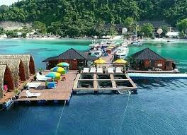
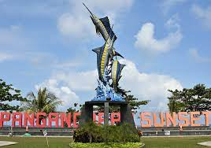

WELCOME DESTINASI WISATA DI INDONESIA
Selamat datang di surga di bumi, destinasi wisata yang akan menghipnotis Anda dengan kecantikannya.
Mengalami petualangan yang tak terlupakan di destinasi wisata ini yang menawarkan keindahan alam yang tiada tara.
Jelajahi pesona alam dan budaya yang kaya di destinasi ini, tempat di mana mimpi bertemu dengan kenyataan.
Destinasi ini adalah tempat yang memadukan sejarah, keajaiban alam, dan keramahan penduduknya dalam satu pengalaman yang luar biasa.
BERIKUT REKOMENDASI DESTINASI DI INDONESIA
1.KLAYAR PACITAN

pantai klayar adalah sebuah pantai dengan pasir putih dan batu karang serta tebing-tebing batu yang mengelilingi.Pantai ini terletak di Pacitan,Jawa Timur dan berbatasan dengan Wonogiri, Jawa Tengah.
Tepatnya berada di Desa Sendang, Kecamatan Donorojo, Kabupaten Pacitan, Provinsi Jawa Timur. Jaraknya sekitar 40 kilometer ke arah barat dari Kota Pacitan.Pantai ini masih segaris dengan
Pantai Teleng Ria yang sudah dikelola sebagai tempat wisata terlebih dahulu.
PACITAN JAWA TIMUR
2.BANDAR LAMPUNG

Bandar Lampung adalah sebuah kota di Indonesia sekaligus ibu kota provinsi dan kota terbesar di provinsi Lampung.
Dengan kepadatan 5.332/km².Kota Bandar Lampung merupakan salah satu kota terpadat di Pulau Sumatra.
serta termasuk salah satu kota besar di Indonesia dan Kota terpadat di luar Pulau Jawa.
BANDAR LAMPUNG
3.PANTAI PANGNDARAN

Pangandaran adalah sebuah kecamatan di Kabupaten Pangandaran,Provinsi Jawa Barat,Indonesia.
Kecamatan ini terletak di bagian paling selatan kabupaten Pangandaran dan
merupakan daerah wisata utama di Kabupaten Pangandaran.
PANGANDRAN
4.GUNUNG BROMO

Malang adalah sebuah kota yang terletak di Provinsi Jawa Timur,Indonesia.
Kota ini memiliki sejarah panjang dan
merupakan salah satu kota terbesar dan terpenting di Jawa Timur
MALANG JAWA TIMUR